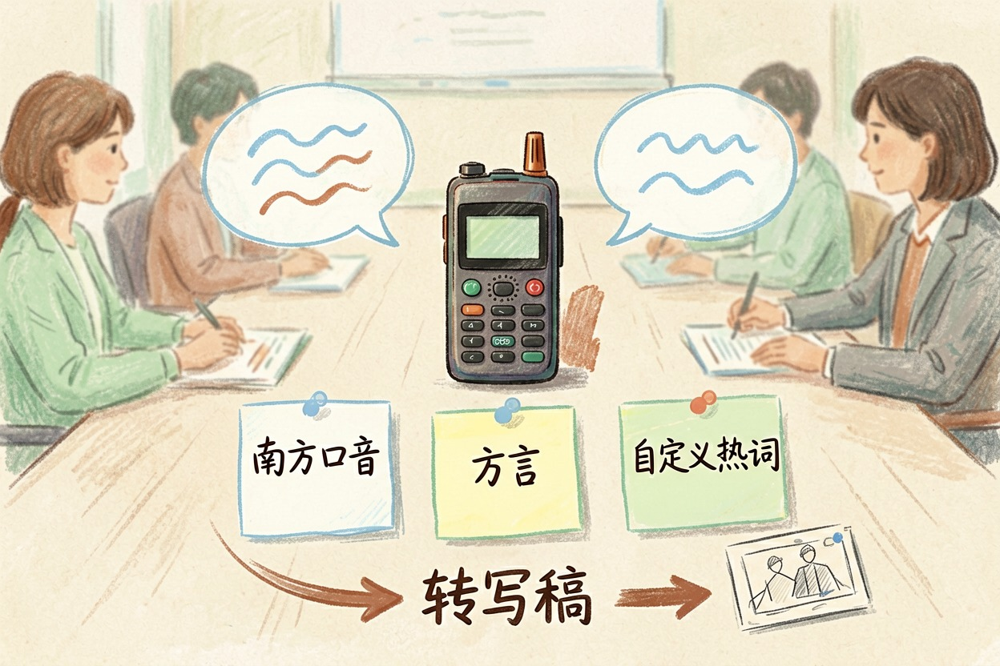
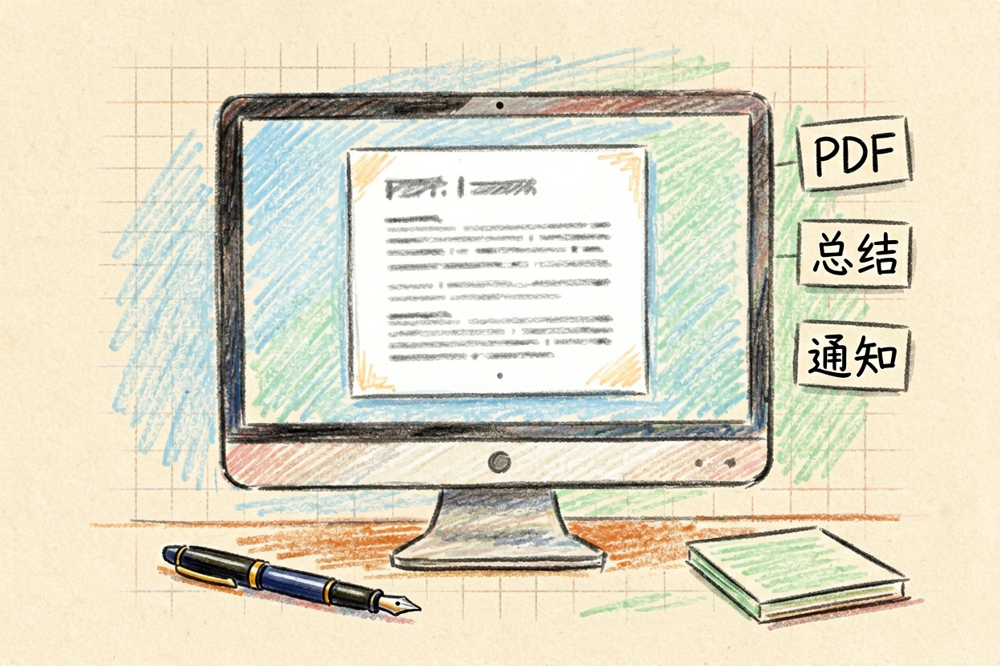
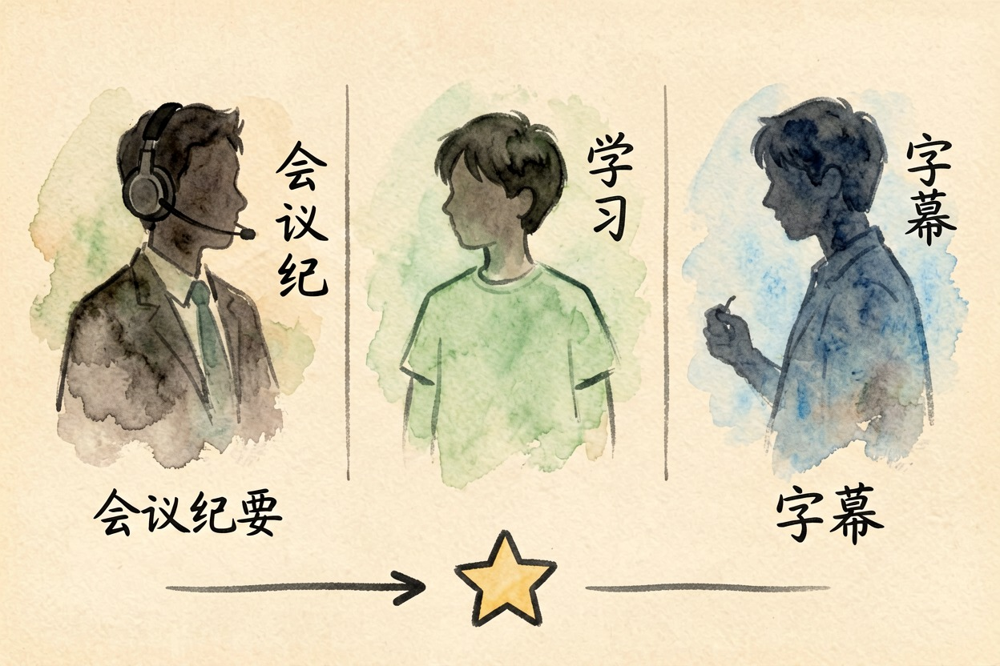
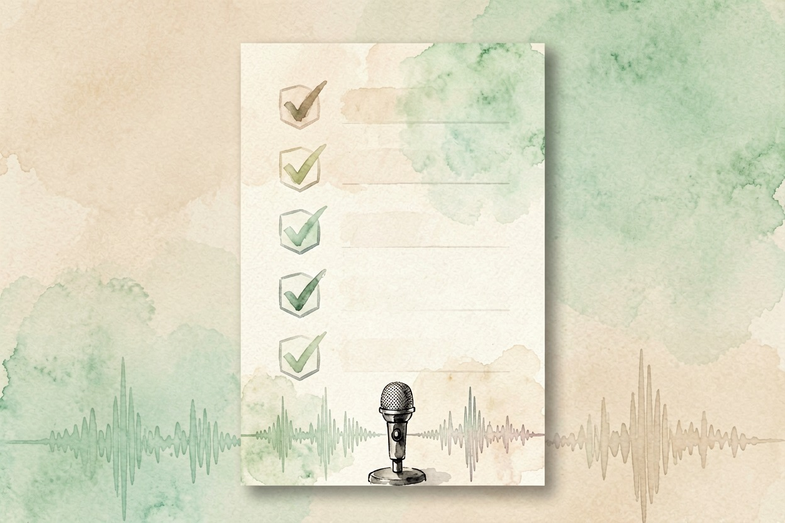

讯飞星火好用吗？语音和学习场景里的表现 — Learntide
它的强弱分得很干脆，声音相关的活儿几乎不掉链子，纯拼文笔的活儿就只能算及格。
讯飞星火好用吗：先看它的老本行

讯飞星火好用吗，这个问题得拆成两半答。语音是它做了很多年的老本行，文本对话属于后来补的课，跟头部几家比不占上风。
所以别盯着总分看。要看你拿它干什么活。
录音、口述、听写这些事，它在国内很难被替代。纯写作和推理，它排不进第一梯队。
把转写稿变成会议纪要的提示词
下面是一段会议转写，含口语和错字。请：
1 按议题分段，每段给一句小标题
2 提取待办，写清负责人和时间点
3 单列「未确认事项」，不要替我下结论
转写内容：<粘贴文本>语音输入和会议转写
实时转写是它最稳的一块。开会录一段，边录边出字，散会时初稿基本就在手上。
带口音也扛得住。南方口音、语速偏快的发言，识别率明显好过通用工具。方言是它的独门项，虽然不是每种都覆盖。
专业名词依然是软肋。行业黑话、人名、英文缩写常转错，得自己过一遍。
好在能设自定义热词。把项目名和同事姓名提前加进去，错字少一大截。
会议超过一小时，先分段再整理。一整段丢进去，细节容易被吞掉。
转写完也别急着交。拿到手的是逐字稿，口水话和重复句删一轮，读起来才像纪要。
学习和作业辅导场景
中小学场景是它另一块主战场。拍照搜题、口语跟读、作文批改都有现成入口。
英语口语练习值得单说。能打分，能标出发音问题，孩子肯开口，这比正确率更要紧。
作文批改偏套路。错别字和结构挑得准，立意上的建议就比较模板化。
数学辅导要留神。步骤写得工整，中间错一步照样往下推。让孩子自己复核，别直接抄。
家长真正该管的是习惯。工具省下时间，也可能顺手省掉思考，用之前把规矩说在前面。
办公文档与日常问答

文档处理够用，谈不上惊艳。读 PDF、总结长文、写通知，交出来的东西中规中矩。
日常问答语气偏正经，结构齐整，写材料合适，闲聊就显得板正。
时效信息要留个心眼。联网结果未必最新，遇到政策和价格，去发布方页面确认。
生态算加分项。输入法、录音、办公套件之间数据能串起来，长期用省事。
移动端比桌面端顺手。手机上按住说话就能出文字，这个动作试过一次就回不去。
值不值得装：分人群说

经常开会、要交纪要的人，装。家里有学生的，装。做视频要字幕的，也可以装。
只想找灵感、写文案、做推理题的人，另找工具更合适。
免费额度日常够用。转写时长和进阶功能看会员档位，掏钱前去它的会员页扫一眼。
还有一点常被忽略。企业版和个人版的功能不是一套，同事说好用，你装的未必是同一个。
最后给一句决策提醒：别拿通用榜单的名次决定装不装。讯飞星火好用吗，答案藏在你每周要说多少话、写多少字里。

本文信息核对于 2026-08-08。AI 产品的价格、免费额度与功能变动频繁，实际以各工具官网当前说明为准。